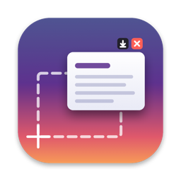

Windover
Pin any part of your screen as a floating window.
Click Windover in the menu bar, drag to select a region of your screen, and it stays on top as a floating window — perfect for keeping a reference, a snippet of text, or a diagram in view while you work.